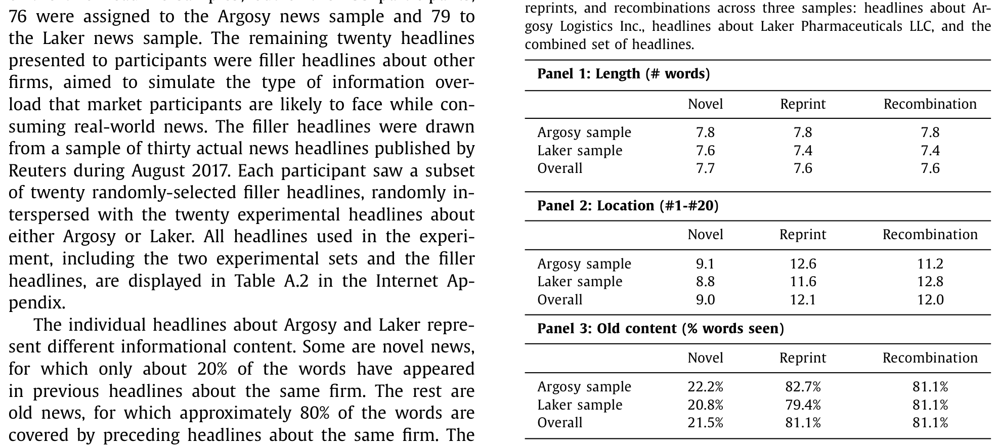
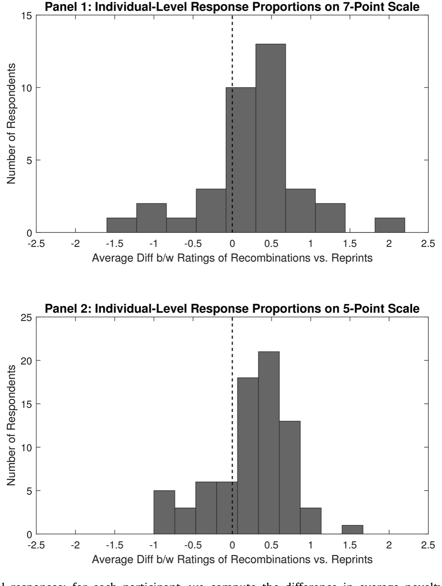
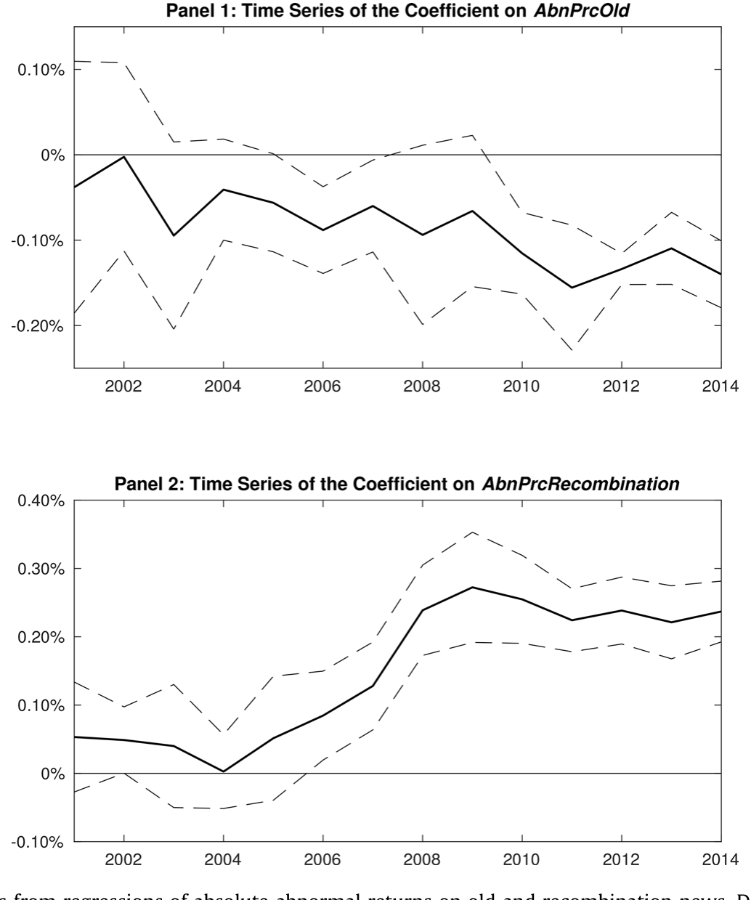
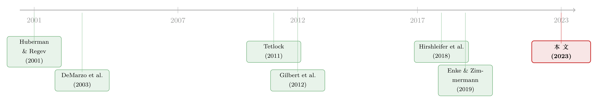

「旧闻」为什么还能再骗市场一次？——当旧消息学会了「重新组合」
本文读的是 Fedyk & Hodson (2023, Journal of Financial Economics)：市场对「旧新闻」的过度反应之谜，根子在于一种特定的有限注意力——「相关性忽视（correlation neglect）」。当一条旧消息只是单纯地重印（reprint）时，连资深从业者都能一眼识破它是旧的；可一旦它把若干条早先的旧消息重新组合（recombination）成一则看似新鲜的报道，哪怕是高盛、Citadel 的专业投资者也会把它误当新闻。作者先用一个针对 155 名金融从业者的实验把这个认知缺陷「钉死」，再用 1700 万条彭博新闻把它翻译成可观测的价格——更大的瞬时反应，以及一周内几乎完全的反转。
1 引言：一个自相矛盾的谜题
「新闻」这个词本身就预设了一件事：它是新的。可金融市场里偏偏存在大量名为「news」、实则毫无新意的东西。过去二十年，信息渠道爆炸式增长——彭博终端一天推送上百万条新闻，RavenPack 聚合一万九千多个来源，Factiva 超过三万个，EventRegistry 更是号称覆盖十五万个不同信源。在这样的信息洪流里，一个投资者要从噪音中筛出真正的新信息，并不是一件轻松的事。
于是文献里出现了一对看上去互相打架的事实。
一边是反应不足（under-reaction）：有限注意力的大量研究告诉我们，投资者常常对初次到来的信号视而不见，等他们后知后觉、或从别的来源再看到同一信号时，价格才慢慢「漂移（drift）」到位（Hirshleifer & Teoh, 2003；Peng & Xiong, 2006；Fedyk, 2022）。
另一边却是反应过度（over-reaction），而且偏偏发生在旧新闻身上。最经典的例子来自 Huberman & Regev (2001)：1998 年 5 月《纽约时报》头版的一篇报道，内容几乎只是把五个月前就公开过的信息重讲了一遍，却让相关公司股价暴涨 330%。Tetlock (2011) 系统地考察了「陈旧新闻」，发现当一家公司的新闻里旧的成分越多，绝对异常收益总体确实越小——但仍残留着对旧新闻的过度反应。Gilbert et al. (2012) 则更进一步暗示了机制：投资者会对「把已公开数据重新汇总成的摘要指标」反应过度。
这就是本文要解的谜：既然旧新闻总体上会让价格反应变小（符合有限注意力的直觉），为什么市场又会对某些旧新闻反应过度、事后还要反转？反应不足和反应过度，究竟在什么地方分了岔？
作者给出的回答异常干净：取决于旧新闻以什么形态出现。
2 真正关键的一步：把「旧」拆成两种
接着，一个自然的问题是——旧新闻就是旧新闻，还能有什么花样？
本文最关键的一步，是把「旧」一分为二：
- 重印（reprint）：一条旧消息，内容主要来自单一的先前报道。比如把昨天那条头条换个措辞再发一遍。
- 重组（recombination）：一条旧消息，内容也全是旧的，但它把两条或更多先前报道里的事实拼接成了一则新报道。
举个论文里的例子。Argosy 公司先后出现过两条新闻：一条说「设计业务不景气、有些棘手的问题要回答」，一条说「卡车业务三季度 EPS 1.2 超预期」。随后出现的第三条头条——「Argosy 三季度业绩超预期，EPS 0.1 升至 1.1」——是对第二条的直接重印，75% 的词都已出现过。而第四条——「Argosy 三季度盈利超预期，但设计业务下滑」——同样是旧新闻（82.5% 的词出现过），却把前两条各取一半拼在了一起，这就是重组。
理论上，这两者携带的「新信息量」完全相同——都是零。可在人脑看来，它们的「新鲜感」天差地别。背后的认知机制，正是实验经济学里反复验证过的相关性忽视：当面对的是同一批底层信号的不同组合时，人会忽略这些信号之间的相关性，把重复的内容误当成独立的新证据（DeMarzo et al., 2003；Eyster & Weizsacker, 2010；Enke & Zimmermann, 2019）。重印只引一个源，相关性一目了然；重组引多个源，相关性被打散、藏了起来——于是它骗过了你。
3 先把缺陷钉死：一个针对从业者的实验
但「市场过度反应」未必就等于「投资者被骗了」——也可能是重组新闻里确实有把零散事实综合起来的真知灼见。要把「认知缺陷」这个解释单独拎出来，最好的办法不是看价格，而是直接去问人。
于是作者通过哈佛商学院校友网络，招募了 155 名在职金融从业者，在 2018 年底到 2019 年初做了一个在线实验。这些人来自高盛、摩根士丹利这样的券商，State Street、PIMCO、Fidelity 这样的资管，Citadel、Two Sigma、Point72 这样的对冲基金，岗位从分析师、交易员一直到合伙人、董事总经理——是货真价实的「聪明钱」。
实验设计极为克制：每个参与者读到一串 40 条头条，其中 20 条关于一家虚构公司（Argosy Logistics 或 Laker Pharmaceuticals，避免真实世界记忆的污染），另外 20 条是从 2017 年路透真实头条里抽来的「填充新闻」，用来模拟信息过载。20 条实验头条被刻意配平成 10 条新闻、5 条重印、5 条重组，三组等长，两类旧新闻与先前内容的文本重叠度也完全一样——总体上重印和重组都恰好有 81.1% 的词被先前头条覆盖（见表 1）。换句话说，重组与重印唯一的区别，就是它引自多个来源还是单个来源。

Table 1
结果干净得让人印象深刻。作为基准，参与者确实分得清新旧：在七分制下，新闻头条平均新颖度 4.52，旧新闻（重印+重组合计）只有 2.82。可一旦钻进旧新闻内部，分岔就出现了——重组被打了 3.03 分，显著高于重印的 2.61 分。在个体层面，68% 的参与者认为重组平均比重印更「新」，而反过来认为重印更新的只有 19%。

Figure 2: Individual-level experimental responses: for each participant, we compute the difference in average novelty scores assigned to recombination
这个差距在两套头条（Argosy 与 Laker）上都成立，在五分制和七分制下都一样稳健。更有意思的是把同一个实验搬到 776 名散户身上时：结论定性一致，但有一个关键差异——散户对所有旧新闻都更容易上当，连最简单的重印都骗得过他们。专业训练能让你识破重印，却挡不住重组。
这一点本身就值得玩味：市场效率的提升，可能是「分层」的——投资者先学会了识别容易的那一类陈旧信息，难的那一类却长期免疫。后文的时间趋势会把这一点放大给你看。
4 从实验室到市场：识别策略与数据
实验把认知缺陷钉死了。接着真正的考验是：它在真金白银的市场里，留下了可观测的痕迹吗？
作者用了一个独一无二的数据集——彭博终端上的全部财经新闻。原始库高达 3.87 亿条；限定在「打了美股个股标签、且被编辑标为高相关」之后，最终样本是 2000 年 1 月至 2014 年 12 月间的 1700 万条新闻。其中约 10% 由彭博自己发布，约 60% 来自主要国内外新闻线，其余来自网络。来源越杂，重印和重组就越多，越适合用来追溯任意一条新闻的「来龙去脉」。彭博终端的用户又以机构投资者为主，这让它在检验「市场相关性」上尤为理想。
分类规则是纯文本的、可复制的。对每条新闻，作者看它有多少独特词，已经出现在「同一公司、前三天内、文本最相似的 5 条先前报道」里：
- 若至少
40%的独特词没出现过 → 标为新闻（novel）； - 若内容被先前报道覆盖达
60%以上 → 标为旧新闻； - 旧新闻中，若旧文本的
80%以上能被单条先前报道覆盖 → 重印；否则 → 重组。
（用余弦相似度等替代方法，分类结果几乎一样。）
核心回归把每天、每家公司的绝对异常收益，对「该公司当天新闻中旧新闻的占比」和「其中重组的占比」做回归。设定大致是这样一个形式（控制变量与固定效应略去，标准误按 Newey & West (1987) 处理自相关）：
$$ |AR_{i,t}| \;=\; \alpha \;+\; \beta\,\mathrm{Old}_{i,t} \;+\; \gamma\,\mathrm{Recomb}_{i,t} \;+\; \text{controls} \;+\; \varepsilon_{i,t} $$
这里 \(\mathrm{Old}_{i,t}\) 是旧新闻占比，\(\mathrm{Recomb}_{i,t}\) 是在控制了旧新闻总水平之后、其中属于重组的占比。两个系数的符号，恰好对应实验里两件事——人们觉得旧新闻整体「没那么新」（\(\beta<0\)），却觉得重组「比重印更新」（\(\gamma>0\)）。
5 主要结果：更大的反应，与一周内的反转
然后，预测被一一兑现。
第一，旧新闻整体压低反应。 公司新闻里旧的占比每多 10%，当天的绝对异常收益就小 11.5 个基点。这与有限注意力的直觉一致：旧消息被识别出来，价格懒得动。
第二，重组放大反应。 在控制旧新闻总量后，把一家公司 10% 的新闻从重印换成重组，当天绝对异常收益反而大 17.6 个基点。也就是说，同样是旧消息，重组的那一份把价格推得更猛——正因为它被误当成了新闻。
但真正关键、也最能区分「认知缺陷 vs. 真知灼见」的一步，是反转（reversal）。 如果重组带来的更大反应是因为它真的综合出了有价值的新洞见，那这部分价格变化应当留下来；可如果它只是被旧信息骗出来的过度反应，那它就该在随后反转回去。
数据站在了「过度反应」这一边。旧新闻占比每多 10%，预示着当天收益的 13.9% 会在随后一周内反转；而在旧新闻中，重组占比每多 10%，反转再增加 16.9%。算一笔账：样本期内个股日均绝对收益约 1.15%，于是 10% 的重组增量对应一周内 16.9% × 1.15% ≈ 19 个基点的可预测反转；而它当天造成的初始冲击约 18 个基点——几乎完全反转。重组新闻激起的那点额外波动，一周之内就被市场自己抹平了。
这与重组在别的领域所扮演的正面角色形成了有趣的对照。Hirshleifer et al. (2018) 发现，引用了更广技术门类的专利能预示企业生产率的持续提升和更高的异常收益——在创新里，重组是好事。可在金融新闻里，相关性忽视带来的错误过度反应，盖过了「综合零散事实」可能带来的正面价值。（关于「过度反应」如何能从更底层的认知机制里长出来，可参见《好消息让你想起好消息：把「过度反应」拆回记忆的联想》。）
6 几个延伸：注意力、散户，以及时间的方向
作者还把这条主线往四个方向各推了一步，每一步都在给「相关性忽视」加固。
注意力。 用 Ben-Rephael et al. (2017) 基于彭博终端的投资者注意力指标（证券-日度层面）切样本：注意力高时，市场对旧新闻的反应确实更弱——但这主要靠把简单重印筛掉实现的，重组效应在高注意力时依旧存在。注意力能治重印，治不了重组。
散户 vs. 机构。 用机构与散户的订单失衡看，旧新闻整体上引来相对更多的散户交易（而非机构），但对重组而言这种「散户更冲动」的差异反而更小——和实验里散户「连重印都上当」彼此呼应。
情绪与模糊度。 结果对正面、负面新闻几乎一样，对「硬」的定量信息与「软」的主观信息也都稳健。这条认知缺陷不是某种情绪的副产品。
时间趋势。 这是我个人觉得最漂亮的一张图。作者用 Fama & MacBeth (1973) 的日度回归，逐年估计系数。结果是：高旧新闻公司的异常日收益逐年变小——市场在进步；但重组的差异化反应却逐年变大，「10% 重组增量」的系数从 2001 年的 +5 个基点，一路升到 2014 年的 +24 个基点。

Figure 6: Time series of the coefficients from regressions of absolute abnormal returns on old and recombination news. Daily Fama and MacBeth (1973) c
换句话说，二十年里投资者越来越擅长识破简单的重印，却对「把旧信息重新拼装」的把戏越来越没辙。市场的成熟是单向的——它学会了容易的那一课，却把难的那一课越落越远。
7 文献脉络
把这篇论文放回它生长的那条线里，故事会更清楚。
最早的源头是两股看似相反的力量。一股是有限注意力下的反应不足：Hirshleifer & Teoh (2003)、Peng & Xiong (2006) 奠定了「投资者注意力有限、信息消化滞后」的框架。另一股是对旧新闻的反应过度：Huberman & Regev (2001) 用那个 330% 的极端案例点了题，Tetlock (2011) 把它做成了系统证据，Gilbert et al. (2012) 则隐约指向了「重新汇总的摘要信息」这个机制。

与此并行，行为/实验经济学这一支提供了理论弹药：DeMarzo et al. (2003) 把相关性忽视写进了「说服偏差」的模型，Ortoleva & Snowberg (2015) 进一步刻画，Eyster & Weizsacker (2010)、Enke & Zimmermann (2019) 则在实验室里反复确认——人确实算不清复杂的相关性。本文的位置，正是把这条「实验室里的认知偏差」与那条「资产价格里的旧新闻之谜」焊接在了一起：它既是第一篇在金融新闻情境里直接给出相关性忽视实验证据的论文（而且对象是资深从业者），又用 1700 万条彭博新闻证明了它在价格上的真实印记。
值得一提的是，在「重组是好是坏」这个问题上，本文和 Hirshleifer et al. (2018) 构成了一组耐人寻味的对话：创新里的重组创造价值，新闻里的重组制造幻觉。（关于「信息如何在投资者之间慢慢扩散、又为何卡壳」，本博客另有《被「同一批股东」拖慢的消息》可对照阅读。）
8 评论与延伸（Q&A + 研究方向）
(a) 几个可能的疑问
Q：重组和重印的「文本重叠度」一样，凭什么说价格差异来自重组、而不是别的？
在实验里，这是设计出来的：两类旧新闻在长度、出现顺序、旧内容占比上全部配平（表 1，重叠度都是
81.1%），唯一变量就是引自单源还是多源，所以新颖度差异3.03vs2.61能干净地归因于「重组」。在市场数据里做不到随机分配，作者靠的是反转来识别：如果差异来自真实信息，价格不该反转；它却几乎完全反转了。
Q：重组新闻反应更大，会不会只是因为「值得重组的本来就是大事」？
这正是最关键的内生性担忧。作者的回应仍是反转——
19个基点的额外反应一周内基本抹平。真正的「大事」不会这样回吐。当然，这是间接证据，并非随机实验，下面的担忧里会再谈。
Q：这和「分类学习（category learning）」或单纯的「重复曝光」有何不同？
关键区别在于「多源」。单纯重复（重印）反而更容易被识别为旧（连散户的识别率都更高）；而重组之所以骗人，恰恰因为它把来自不同来源的旧事实拼成了一个看似自洽的新叙事，触发的是相关性忽视，而非简单的记忆衰退。
Q：用「重叠词比例」而不是余弦相似度来分类，会不会把结论做没了？
作者报告用余弦相似度（Cohen et al., 2020；Fedyk, 2022 的做法）分类结果几乎一致，之所以用词重叠比例，纯粹是为了可解释性。对天数窗口、邻居数量、阈值、异常收益度量、以及连续 vs. 离散度量等，结果都稳健。
Q：样本到 2014 年就停了，会不会已经过时？
这是数据商的限制（彭博授权到 2014）。但恰恰是时间趋势给了反向的安慰：到样本末端的
2014年，重组效应不降反升（+24个基点）。若线性外推，今天这个缺陷只会更突出，而非消失。
Q：这对「市场是否有效」意味着什么？
它说明市场效率不是一个标量，而是分层的。投资者在容易的维度（重印）上变得越来越聪明，却在难的维度（重组）上长期不设防。任何「市场越来越有效」的笼统论断，都需要按信息的结构复杂度重新打量。
(b) 几个可能的研究问题与提案
1. 公司债市场里的「重组新闻」反转。 【经济故事】公司债投资者同样消费海量新闻，但债市流动性差、机构主导、对「旧消息」的反应链条与股票截然不同。重组新闻是会在信用利差里激起类似的过度反应+反转，还是因为机构筛选更强而被熨平？这能把本文的认知机制推广到信用市场。 【可行性】中。需把彭博/RavenPack 新闻按 CUSIP 映射到 TRACE 成交，重复本文的文本分类即可；难点在债券「异常收益」与日内流动性的度量，以及成交稀疏带来的噪音。
2. 外资持有人是更好的「重组识别者」吗？ 【经济故事】跨境投资者面对的本地新闻流更陌生、语言/语境成本更高，理论上更容易被重组骗到；但他们也更依赖机构化、自动化的信息处理，可能反而更稳。把本文的重组度量与各股的外资持股比例交乘，能检验「信息劣势」与「处理能力」哪一个占上风。 【可行性】中。13F/国际持股数据 + 新闻文本可得；识别上可借助指数纳入等准外生的外资流入冲击。
3. 流动性提供者会对重组新闻「主动让价」吗？ 【经济故事】若做市商也受相关性忽视影响，重组新闻到来时他们会误判信息含量、过度调整报价，事后再反向修正——这会在 bid-ask spread 和报价深度里留下可识别的「先扩后收」。这把本文从「收益反转」推进到「微观结构」层面。 【可行性】高。TAQ 日内数据 + 带时间戳的新闻即可做事件研究，识别来自新闻到达的精确时点。
4. 大语言模型能否替市场「拆穿」重组？ 【经济故事】本文的缺陷源于人脑算不清多源相关性。若把 LLM 接入新闻流、自动标注「这条其实是 N 条旧消息的拼接」，重组带来的过度反应会被套利掉吗？这既是对机制的反证（如果消失，说明确为认知缺陷），也有现实交易含义。 【可行性】高。本文的分类框架天然适配 LLM 重做；可构造「重组多空」组合检验其 alpha 是否随算法可得性而衰减。
5. 重组效应在宏观/行业新闻上的版本。 【经济故事】Gilbert et al. (2012) 关注的是把已公开数据汇总成的摘要指标。把本文的「单源 vs. 多源」框架搬到宏观新闻（如把多份地区数据拼成一则全国叙事），能检验相关性忽视是否在「宏观-微观」信息的互补/替代关系里也成立（呼应 Hirshleifer & Sheng, 2022）。 【可行性】中。宏观新闻文本可得，但「公司层面收益」需换成行业/指数层面，识别更粗。
我的判断
这篇论文最让我服气的，是它的方法论闭环：先在一个配平到近乎苛刻的实验里，把「重组比重印更骗人」这件事在 155 名资深从业者身上钉死（3.03 vs 2.61，68% vs 19%），再用 1700 万条彭博新闻把同一个缺陷翻译成价格——更大的瞬时反应（+17.6 个基点）与一周内几乎完全的反转。实验负责机制，市场负责相关性，反转负责排除「真知灼见」的替代解释，环环相扣。把「旧新闻之谜」从一个笼统的「过度反应」，精确到「对多源重组的识别失败」，这是实打实的贡献。
对识别，我仍有两点保留。其一，市场部分终究不是随机实验，「重组是否被重要内容触发」这个内生性，靠反转只能间接排除——一个同时引发更大初始反应又恰好快速反转的遗漏变量（比如某类高频但低质的事件）在原则上仍可能存在，作者对此的防线主要是稳健性而非外生冲击。其二，实验用的是虚构公司和头条而非全文，外部效度需打个折扣（作者自己也承认头条更易处理、可能低估了真实世界的缺陷）。
后续我最想看到的，是把这套「单源 vs. 多源」的标尺搬进公司债与信用市场，看机构主导、流动性稀薄的环境会放大还是熨平这个缺陷；以及在 LLM 能廉价拆穿重组的今天，那 +24 个基点的 2014 年效应，到 2025 年究竟是被套利殆尽，还是依然倔强地活着。
参考文献
- DeMarzo, P.M., Vayanos, D., Zwiebel, J. (2003). Persuasion bias, social influence, and unidimensional opinions. Quarterly Journal of Economics 118(3), 909–968.
- Enke, B., Zimmermann, F. (2019). Correlation neglect in belief formation. Review of Economic Studies 86(1), 313–332.
- Eyster, E., Weizsacker, G. (2010). Correlation neglect in financial decision-making. Working paper.
- Fama, E.F., MacBeth, J.D. (1973). Risk, return, and equilibrium: empirical tests. Journal of Political Economy 81(3), 607–636.
- Fedyk, A. (2022). Front page news: the effect of news positioning on financial markets. Journal of Finance, forthcoming.
- Gilbert, T., Kogan, S., Lochstoer, L., Ozyildirim, A. (2012). Investor inattention and the market impact of summary statistics. Management Science 58(2), 336–350.
- Hirshleifer, D., Hsu, P.-H., Li, D. (2018). Innovative originality, profitability, and stock returns. Review of Financial Studies 31(7), 2553–2605.
- Hirshleifer, D., Sheng, J. (2022). Macro news and micro news: complements or substitutes? Journal of Financial Economics 145(3), 1006–1024.
- Hirshleifer, D., Teoh, S.H. (2003). Limited attention, information disclosure, and financial reporting. Journal of Accounting and Economics 36(1–3), 337–386.
- Huberman, G., Regev, T. (2001). Contagious speculation and a cure for cancer: a non-event that made stock prices soar. Journal of Finance 56(1), 387–396.
- Ben-Rephael, A., Da, Z., Israelsen, R.D. (2017). It depends on where you search: a comparison of institutional and retail attention. Review of Financial Studies 30(9), 3009–3047.
- Ortoleva, P., Snowberg, E. (2015). Overconfidence in political behavior. American Economic Review 105(2), 504–535.
- Peng, L., Xiong, W. (2006). Investor attention, overconfidence and category learning. Journal of Financial Economics 80(3), 563–602.
- Tetlock, P.C. (2011). All the news that's fit to reprint: do investors react to stale information? Review of Financial Studies 24(5), 1481–1512.